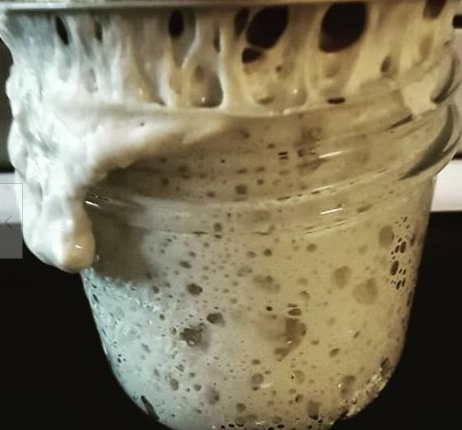

Sourdough Starter

Essential in making Sourdough Bread!
Sourdough starter is the first step in making homemade bread the natural way!
Ingredients
- Unbleached flour
- Distilled water
Steps
- Get a container.
- Make sure you have plenty of space! It can grow three times its original size.
- Measure four oz of water, four oz of unbleached flour.
- Mix together.
- Put a towel or rag over it. Let sit.
- The next day, get rid of half then refeed it by giving it four oz of water and 4 oz of unbleached flour. Do this everyday. It has to be fed everyday! If you get tired of doing this I have ways you can permanently store.